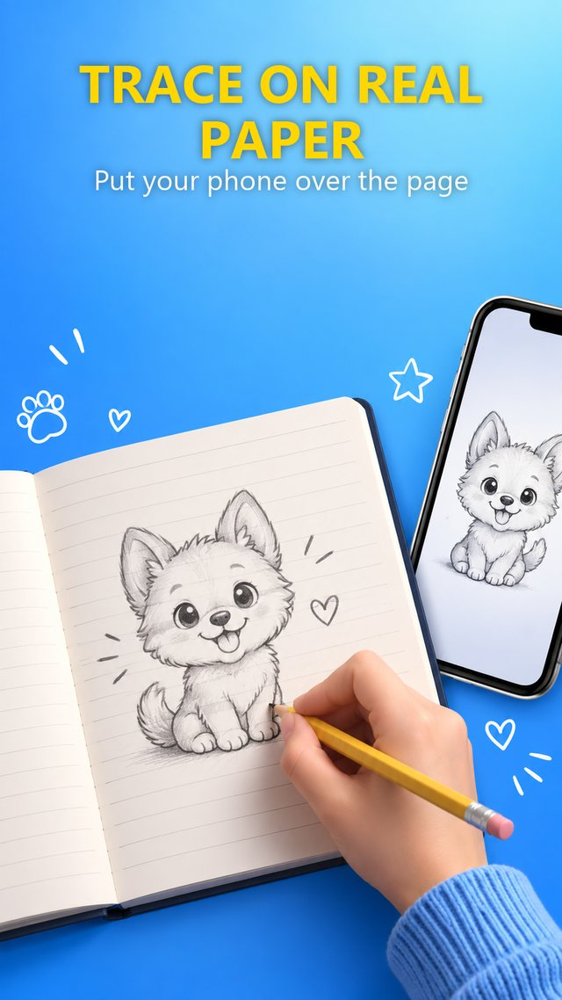

Press kit
AR Draw Anime: Trace Sketch is a free Android app that holds a photo or template on a real sheet of paper through the phone's camera, so the user can trace it by hand with a pencil.
On phones that support Google's ARCore the image is anchored to the paper itself rather than to the screen, so it stays in place when the phone moves — the problem that makes most tracing apps frustrating to use. On phones without ARCore it falls back to a screen overlay with a lock button.
Download the press kit (11 MB)
The short version
A one-paragraph summary, free to quote:
AR Draw Anime: Trace Sketch is a free Android app that turns a phone into a tracing tool. Point the camera at a sheet of paper, place any photo or one of sixteen built-in line drawings on it, and draw what you see. On phones with ARCore the picture is pinned to the paper rather than the screen, so it stays put when your hand moves. It includes on-device background removal, an edge-detection mode that turns photographs into clean contour lines, and an opacity slider. Everything runs on the phone: no account, no uploads, and the camera feed is never recorded.
Facts
| Name | AR Draw Anime: Trace Sketch |
|---|---|
| Developer | blayza |
| Platform | Android 7.0 and up |
| Price | Free. No subscription, no in-app purchases. |
| Released | September 2026 |
| Store page | play.google.com/store/apps/details?id=com.artracing.studio |
| Package | com.artracing.studio |
| Contact | saadfellak0000@gmail.com |
What makes it different
- The image is anchored to the paper, not the screen. This is the one real difference from the dozens of similar apps. Lift the phone, put it down, come back an hour later — the drawing is in the same place at the same size.
- Background removal runs on the device. Photograph a cat on a sofa, tap once, and the sofa is gone. Nothing is uploaded.
- Edges mode. A photograph is a block of tone and difficult to trace. Edge detection converts it to contour lines on a transparent background so the user's own pencil marks stay visible underneath.
- Sixteen templates included free, across anime faces, practice sheets (hands, hair, proportions) and creatures.
- No account, no uploads, no subscription.
Who it is for
Beginners who want to draw and do not believe they can. Parents looking for an activity that uses a phone but ends with something real on paper. People learning anime and manga style, which is the most-searched drawing subject online.
An honest note
Tracing is a contested subject among artists, and the app does not pretend otherwise. It builds line control and the confidence to finish a drawing; it does not teach you to draw from imagination. The site has a longer piece arguing both sides if that angle is useful for a story.
Screenshot

Higher-resolution screenshots, the icon and the feature graphic are in the press kit download.
Contact
saadfellak0000@gmail.com — happy to answer questions, provide extra screenshots, or explain how the AR anchoring works.